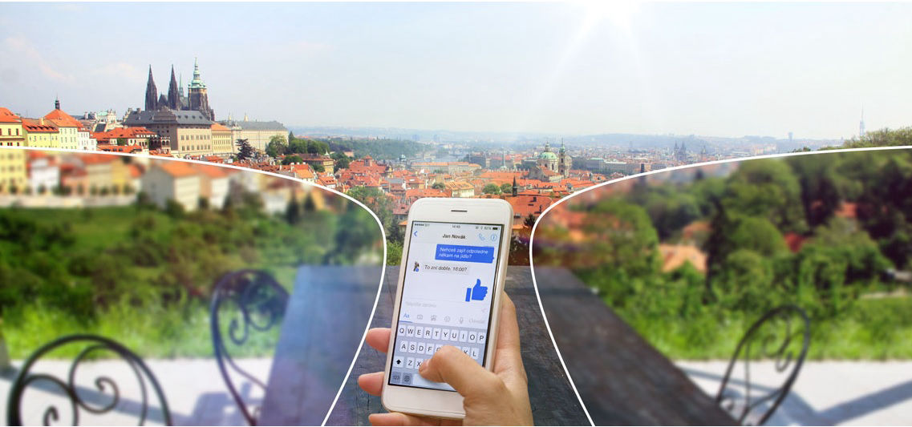

Multifokální brýlové čočky poskytují možnost vidění na všechny vzdálenosti. Oblasti s různou korekcí zraku se částečně překrývají a tím odstraňují skoky obrazu docházejících u bifokálních brýlových čoček.

POLARIZAČNÍ
Na rozdíl od klasických slunečních brýlí, polarizační čočky odstraní až 99,9 % odlesků z vodorovných povrchů (silnice, voda, sníh). Jakmile jednou vyzkoušíte, již nebudete chtít nosit běžné sluneční brýle!
MULTIFOKÁLNÍ
Multifokální brýlové čočky poskytují možnost vidění na všechny vzdálenosti. Oblasti s různou korekcí zraku se částečně překrývají a tím odstraňují skoky obrazu docházejících u bifokálních brýlových čoček.